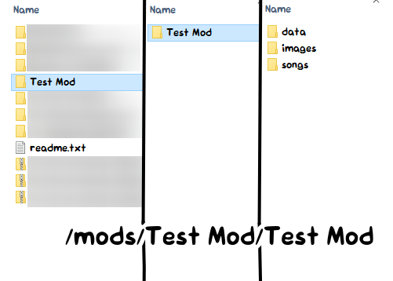
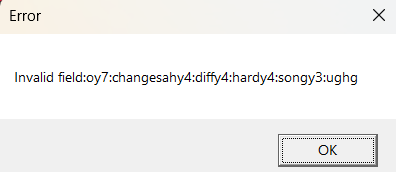

Troubleshooting
Black screen
This usually means the game failed to start. The reasons for this could be:
- Non-ASCII characters on the file path (example:
C:\Users\Niña\) - File path being too long
- Running the game inside an archive (like
.zipfiles) or on a cloud folder (like Onedrive)
The solution is to move the folder somewhere else on the disk.
Mod refuses to load
Double check your mod folder.
If it looks like this:

Then enter your mod folder and move its contents up a level (place everything on the right to the middle).
It should be the folder structure similar of ./mods/Your Mod/data/.
No audio
You probably muted the game. Hit 0 or + on your keyboard.
Can't use 0 or +? You installed a VERY old CodenameEngine Action build that broke it! Go to Controls to rebind the keys!
Invalid field error
Some players might have found out that after a song, the game crashes with this error:

This is a save data error in which saves from Legacy (v0.1) are not recognized in v1.0. The fix is to wipe the save in Options > Miscellaneous > Reset save data.
If you are unable to reset it in the engine, you may instead delete the save yourself in your file manager.
The folder to be deleted is
- Windows:
%AppData%/CodenameEngine - Mac:
Users/[your user]/Library/Application Support/CodenameEngine - Linux:
/.local/share/CodenameEngine
Modding
Notes only on the left side of the screen
Change the strumline X position of the second strumline to be 0.75 in the Chart Editor. New strumlines use the X position of 0.25 by default.
Setting a sprite's velocity / acceleration does nothing
If you had set this property using the <property /> tag in the stage XML, you need to set sprite.moves to true.
This field is false by default for optimization reasons, since it would be wasteful if it runs on stationary sprites.
Character / stage editor is buggy
Every editor except for the Chart Editor is buggy and unfinished. It's better that you manually edit the XML in the meantime.
Strum rotation also moves notes
Set strum.noteAngle to 0.
Atlas animations not working
This is caused by multiple reasons, but the most common one is that you're using sprite.animation.play("anim") as opposed to sprite.playAnim("anim"). If you're using the raw FlxAnimate class then use sprite.anim.play("anim") instead.
stage variable not working
This happens in stage scripts. The issue is that you have a sprite with the name "stage" which causes conflicts.
To fix this, rename that sprite to something else.
Game can't find assets for my stage
You might have put folder="/images/stages/whatever". The stage XML's folder attribute actually has the game start looking in /images.
This means that if you put folder="/stages/cliffside", it looks for assets in /images/stages/cliffside.